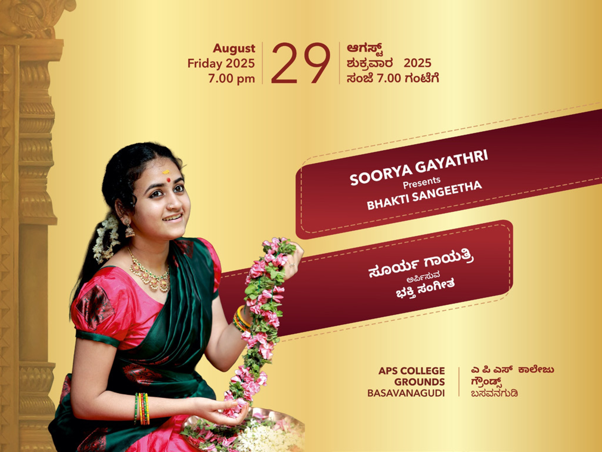
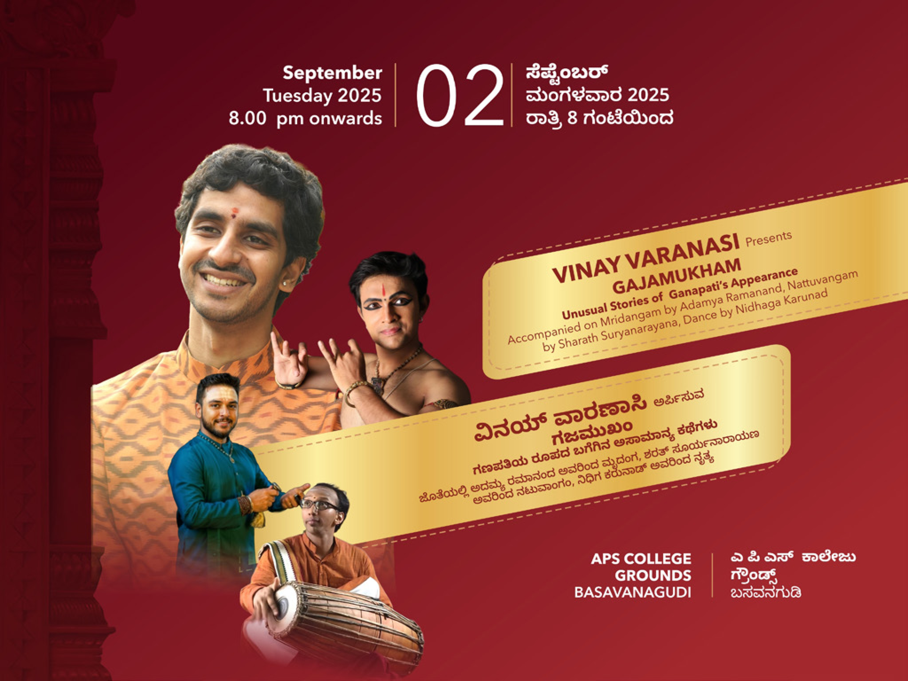
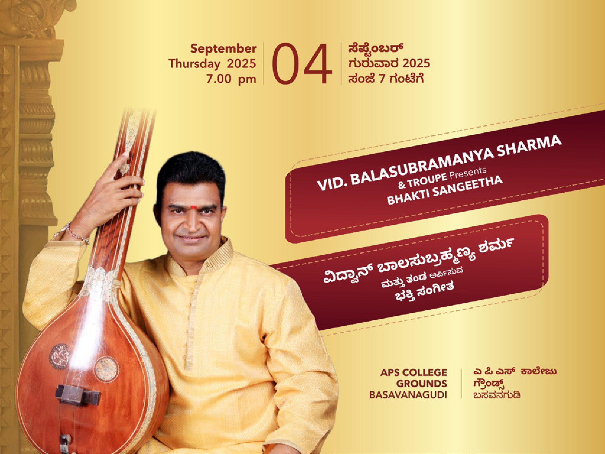
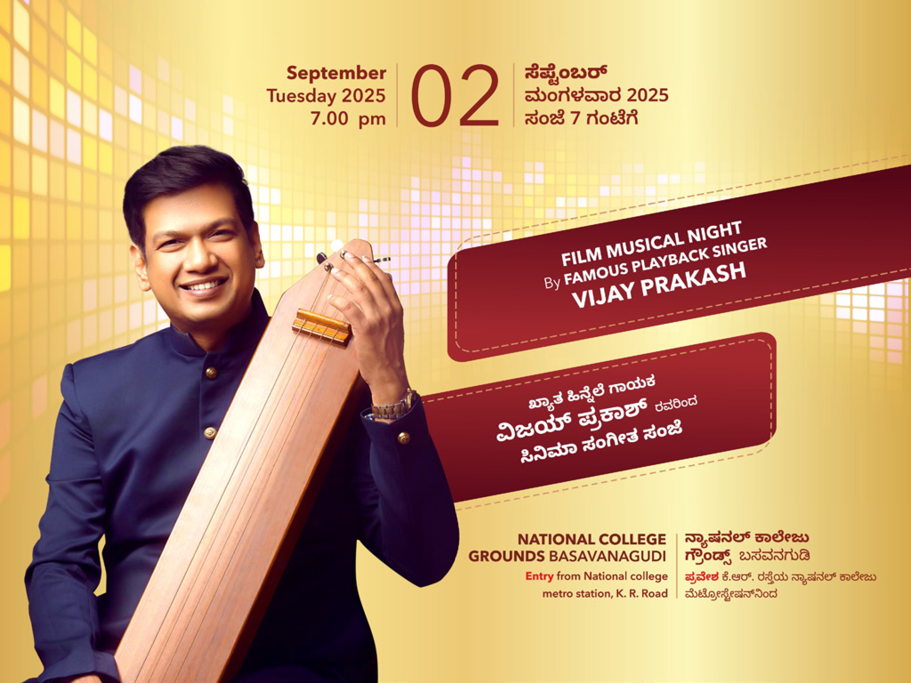
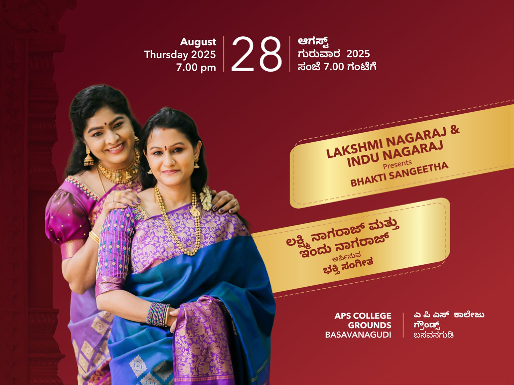
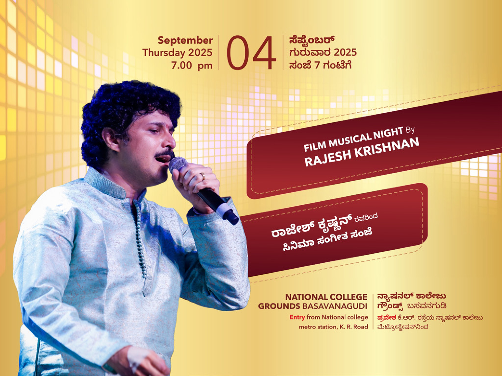
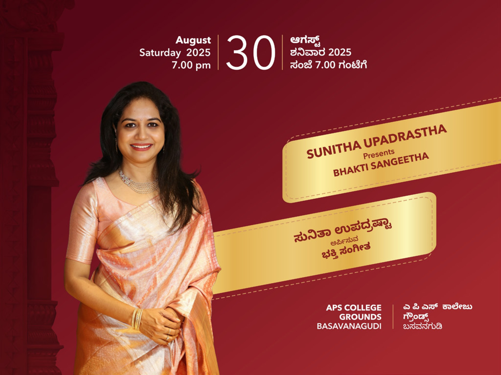
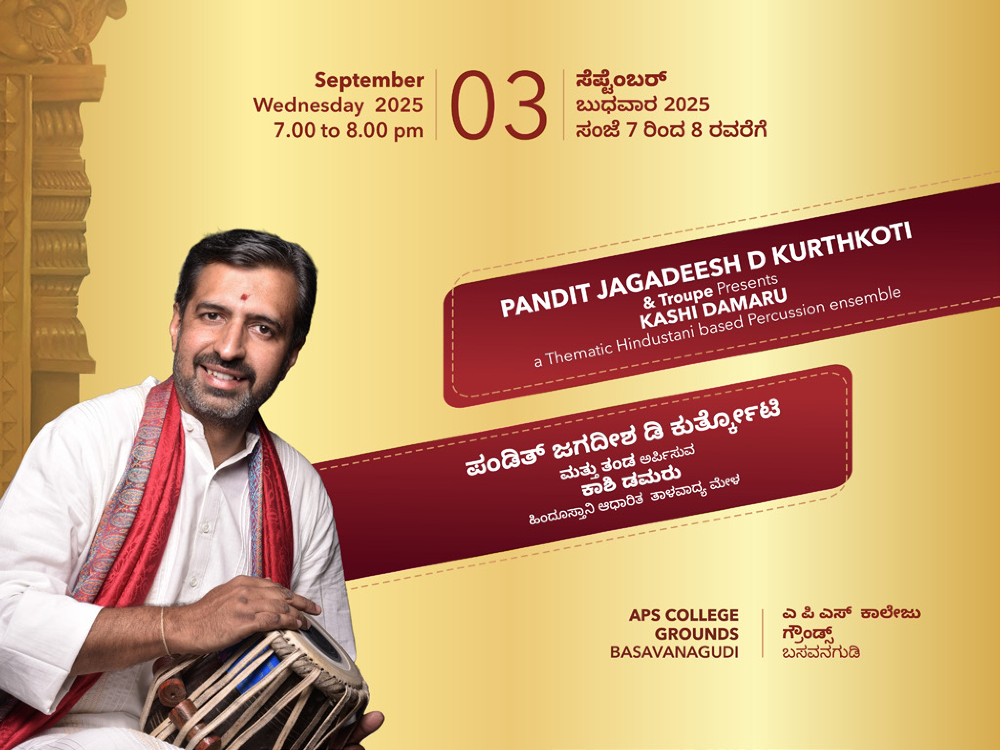
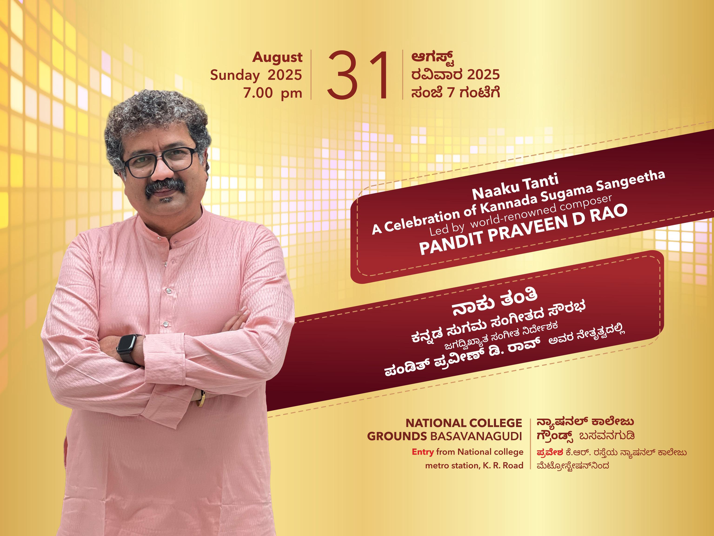
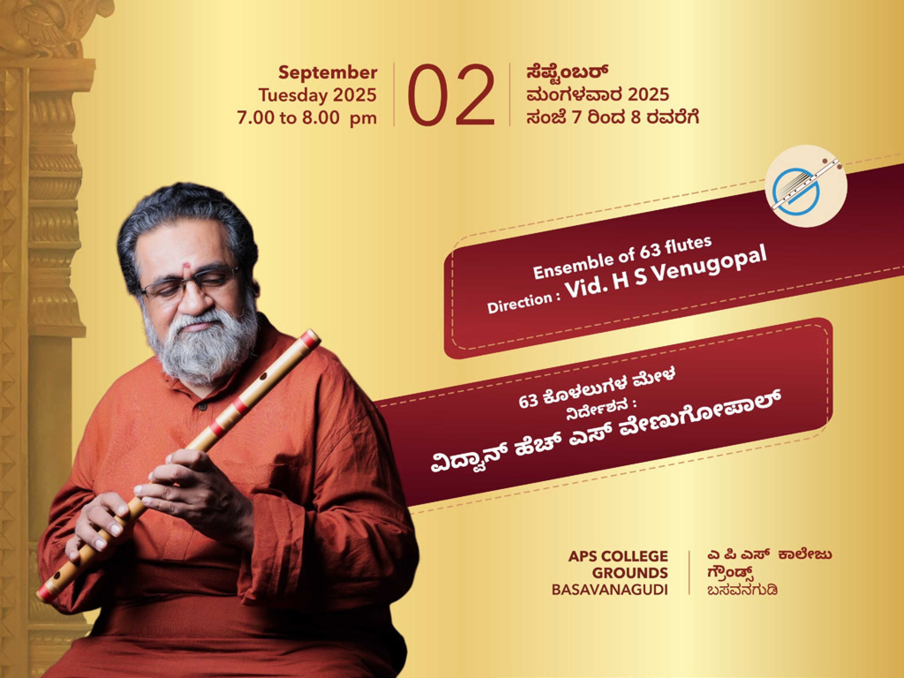

Hindustani Classical Vocal
Artist Name
Performed in 2015 & 2019A revered name in Hindustani classical vocal music, whose soul-stirring recital remains one of the most cherished evenings in BGU's history.
From legendary maestros to celebrated contemporary stars, Bengaluru Ganesh Utsava has been blessed by some of India's finest voices, instrumentalists and dancers. Here we honour a few who have lit up our stage.
A glimpse of the iconic artists from across India who have performed at the Utsava across previous years. Each carried forward a timeless tradition and left an unforgettable mark on our devotees.
A revered name in Hindustani classical vocal music, whose soul-stirring recital remains one of the most cherished evenings in BGU's history.

Known for divine devotional renditions that filled the grounds with bhakti, drawing thousands of devotees each evening.

A masterful Carnatic vocalist whose intricate ragas and devotional kritis enthralled audiences of all generations.

An instrumental virtuoso whose mesmerising performance was a highlight of the season's cultural calendar.

A celebrated playback voice of Indian cinema who turned the Utsava stage into a night of unforgettable melodies.

A graceful exponent of Bharatanatyam whose expressive storytelling brought ancient epics to life on stage.

A much-loved Kannada playback singer whose chart-topping hits had the entire crowd singing along.

A versatile vocalist blending classical precision with heartfelt devotion in every composition.

An entertainer par excellence whose lively repertoire of light and film music delighted the gathering.

A pioneering fusion artist whose grand orchestral arrangement was a spectacular feast for the senses.

A legendary figure of the silver screen whose stage presence drew one of the largest crowds in BGU history.

A breathtaking ensemble of flautists whose harmonious performance was a serene, meditative experience.